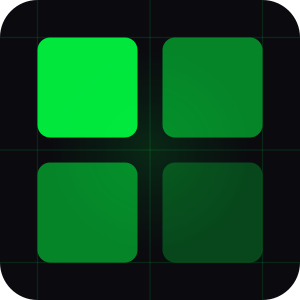

This guide needs JavaScript to show its pages. Without it you can still open the component datasheets, the plate settings and the screw key (Letter) or (A4).
Choose “Larger view”, then scroll around the image. Drawings are not to scale.